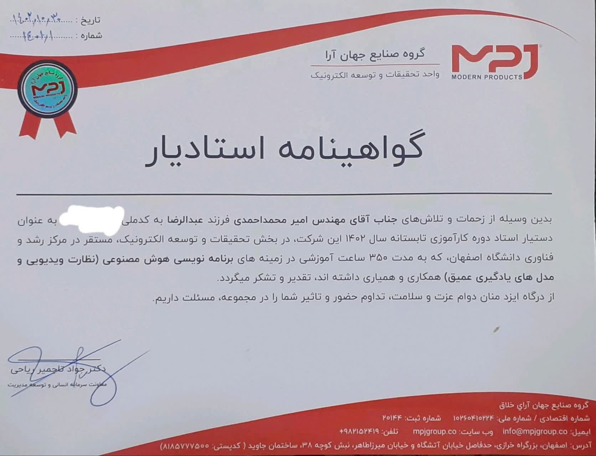
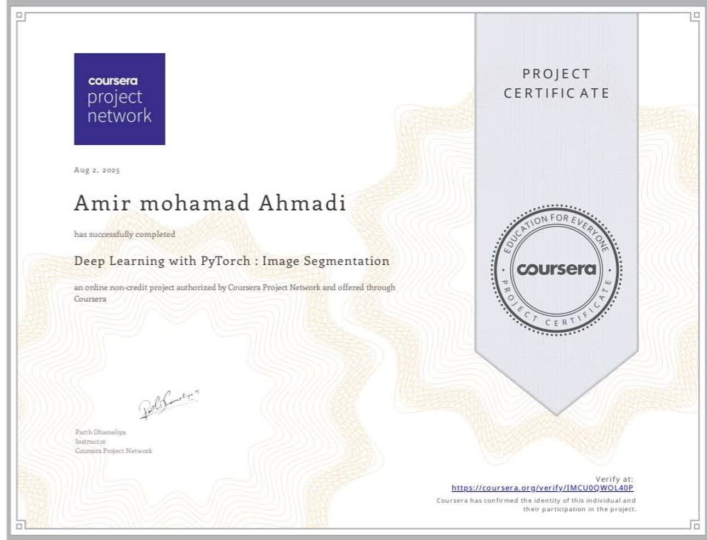
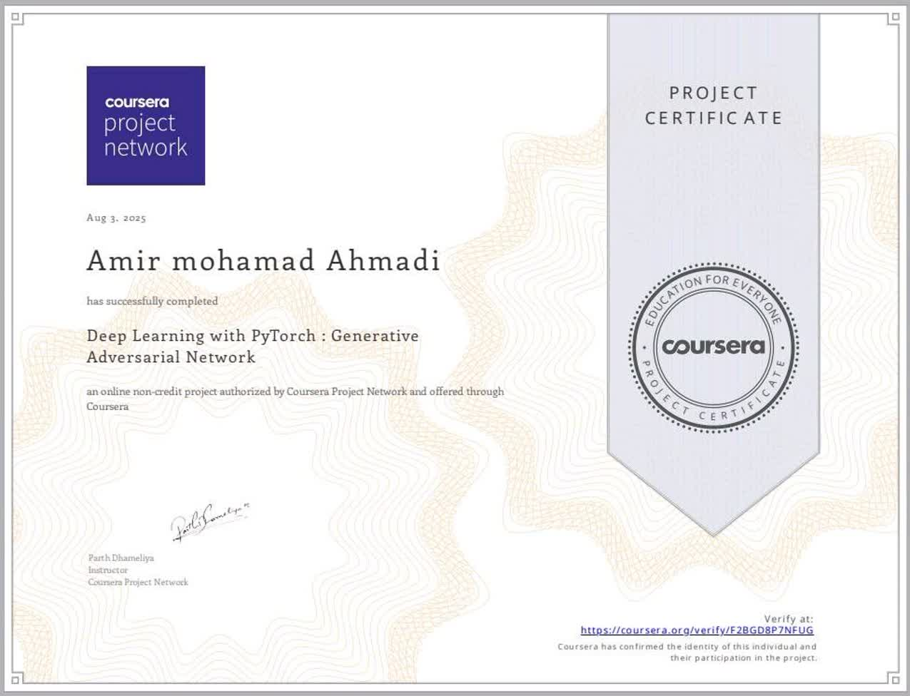

امیرمحمد احمدی
توسعهدهنده ارشد هوش مصنوعی و اینترنت اشیا (IoT) با بیش از ۵ سال تجربه در تحقیق و توسعه و استفاده از نرمافزارهای سازمانی در زمینههایی مانند هوش مصنوعی (AI) و اینترنت اشیا. بهرهگیری از مهارتها و تجربههای بهدستآمده در تحقیق برای کاربردهای تشخیص فعالیت در ویدئو و پردازش صدا و تصویر با TensorFlow، Keras و PyTorch. ارائه راهحلهای تجاری نوآورانه و پیشرفته با روحیه کار تیمی بالا برای کمک به دیگران و همتیمیها. هدف شغلی: توسعه و اجرای پروژههای نوآورانه و عملی مبتنی بر هوش مصنوعی و اینترنت اشیا.
تجربه کاری
سیماکابل نقش جهان، اصفهان، ایران
آذر ۱۴۰۳ – آذر ۱۴۰۵توسعهدهنده ارشد هوش مصنوعی و میکروکنترلر در محل (تمام وقت)
- توسعه اکوسیستم یکپارچه خانه هوشمند را بر پایه دانش میکروکنترلر و با برنامهنویسی ESP32-WROOM، ایزولاسیون اپتوکوپلر و پروتکل Wi-Fi رهبری کردم که منجر به ارائه ۷ محصول جدید IoT و افزایش ۲۵٪ سبد خدمات شرکت شد.
- دستگاههای هشدار ایمنی شامل نشتیاب آب (با سنسورهای رطوبت و جریان) و نشتیاب گاز و دود (با سنسورهای گاز و دود) را توسعه دادم که با ارتباط JSON به Message Broker و فعالسازی رله، خسارات مالی و جانی را ۳۰٪ کاهش داد.
- دستگاه اندازهگیری دمای غیرتماسی (ThermoScan Optimizer) را با سنسور مادون قرمز برای بهینهسازی مصرف انرژی توسعه دادم که ۱۵٪ کاهش مصرف سیستمهای گرمایشی را به همراه داشت و دادههای نقشه حرارتی را به Message Broker ارسال میکرد.
- مجموعه رلههای هوشمند (تککانال پکیج، ۳ کانال کولر آبی، ۴ کانال پرده برقی و رله IO) را با طراحی مودهای ثابت، لحظهای، تاگل و اتوماسیون پیادهسازی کردم که کنترل دقیق و سناریومحور تجهیزات را ممکن ساخت.
- مدل یادگیری عمیق برای تشخیص اعمال غیرنرمال (درگیری و زمینخوردن) را با استفاده از دیتاستهای SPHAR و UCF-Crime، تکنیکهای Data Augmentation و ابزارهای OpenPose و MediaPipe توسعه دادم که به دقت بالای ۷۰٪ دست یافت.
- سرویس تشخیص فرمان صوتی فارسی را بهصورت دمو و با استخراج ویژگیهای صوتی و بهرهگیری از TensorFlow و Keras پیادهسازی کردم که قابلیت اتصال به اکوسیستم IoT را فراهم کرد.
- قابلیت اتصال و پخش زنده دوربینهای IP (RJ45) را در نرمافزار MPJLink با پروتکل RTSP و بهینهسازی تأخیر (Latency) پیادهسازی کردم که نظارت امنیتی لوکال و ریموت را ممکن ساخت و با پاسخگویی به نیازهای مشتری، افزایش ۲۰ درصدی خدمات و محصولات شرکت را به همراه داشت.
سیماکابل نقش جهان، اصفهان، ایران
مرداد ۱۴۰۲ – آبان ۱۴۰۳پژوهشگر و توسعهدهنده هوش مصنوعی و IoT در محل (تمام وقت)
- سیستمهای هوشمند خانگی و ساختمان را با یکپارچگی کامل پروتکلهای Modbus RTU، Zigbee و IR و ارتباط بیسیم و بومی توسعه دادم؛ این نتیجه از طریق پیادهسازی Firmware و Embedded Software روی ماژولهای Raspberry Pi، Rock Pi و Arduino و طراحی معماری IoT حاصل شد.
- اجاق گاز و هود IoT را با کار با API، Wi-Fi Manager، RESTful API و Message Broker توسعه دادم که افزایش حدود ۲۵٪ خدمات و محصولات شرکت را به همراه داشت.
- از طرح مسئله فناور با عنوان «سامانه سختافزاری و نرمافزاری مبتنی بر IoT» جهت اخذ وضعیت دانشبنیان دفاع کردم که معافیت مالیاتی شرکت و کاهش حدود ۱۵٪ هزینههای شرکت را به دنبال داشت.
- نقش رابط بین بخشهای R&D، UI/UX، Hardware، Software و AI و ارتباط با مشتریان را با بیش از ۱۲ کارمند ایفا کردم. با بکارگیری Scrum (Backlog Refinement، Sprint Planning و Daily Standup با Scrum Master، Technical Lead و Product Owner) و مستندسازی نیازمندیها و مدیریت Product Backlog در Jira و Confluence، شفافیت پیشرفت، تحویل تدریجی و انطباقپذیری سریع با تغییر نیازمندیها محقق شد.
- زمان هماهنگی بینتیمی را حدود ۳۰٪ کاهش دادم و دوبارهکاری را به حداقل رساندم.
- با تحلیل مصرف منابع و بازطراحی ماژولهای سختافزاری، راهکارهای بهینهسازی سختافزار ارائه دادم که راندمان فروش کسبوکار را بیش از ۲۰٪ افزایش داد.
- فرآیند جذب و آموزش ارتقای فنی کارکنان و کارآموزان را با طراحی مسیر یادگیری و ارزیابی شایستگی اجرا کردم و بیش از ۳۶۰ ساعت آموزش ارائه دادم. موضوعات شامل EEPROM، OTA، Message Broker، Multithreading، مادون قرمز (IR)، MQTT و RESTful API و همچنین CNN، TensorFlow، OpenPose، MediaPipe، Data Augmentation و Data Preprocessing بود.
- با بهرهمندی از تسهیلات مرکز رشد و فناوری دانشگاه اصفهان، حدود ۵ کارآموز دانشجو جذب و پس از ارزیابی شایستگی، زمینه استخدام آنها را فراهم کردم؛ رویکردی که به کاهش حدود ۲۰٪ هزینه اجاره دفتر نیز منجر شد.
شرکت جهان آرای اسپادانا، اصفهان، ایران
مرداد ۱۴۰۱ – تیر ۱۴۰۲پژوهشگر در محل (تمام وقت)
- راهکارهای موجود خانه هوشمند شامل تویا، سایتک، هموند و لینکاپ، پروتکلهای استاندارد Modbus، Zigbee و Wi-Fi، گیتویهای Modbus و Zigbee و تاچپنلهای تویا (نمایشگر + گیتوی) را بررسی کردم. پس از بررسی نیازمندیها، راهکارهایی برای توسعه سریعتر پشتیبانی از Modbus و Zigbee (حدود ۵۰٪) و کاهش حدود ۳۰٪ هزینه مشتریان ارائه دادم که مزیت رقابتی ایجاد کرد.
- دسترسی به پورتهای سختافزاری و کنترل ۲ نمایشگر جداگانه را با کتابخانههای C++ و لایه JNI روی پنل لمسی اندرویدی در ۴ ماه پیادهسازی کردم.
- راهکار MVP را برای ایرانیسازی و توسعه نرمافزار فارسی MPJ Link ارائه دادم که سرعت توسعه را حدود ۵۰٪ افزایش داد. با ارتقای قابلیت ارتباط با برندهای کلید و ترموستات Modbus، تعاملپذیری با برندهای دیگر حدود ۳۰٪ و اعتمادسازی و همکاری با کسبوکارهای دیگر حدود ۷۰٪ بهبود یافت؛ دستاوردی که جلب نظر مدیریت، کسب امتیاز و جذب سرمایه برای تجاریسازی و بومیسازی را به دنبال داشت.
تحصیلات
دانشگاه سمنان، دانشکده مهندسی برق و کامپیوتر، ایران
۱۳۹۹ – ۱۴۰۳دانشگاه شیخ بهایی، دانشکده کامپیوتر، ایران
۱۳۹۴ – ۱۳۹۸- کارشناسی مهندسی نرمافزار کامپیوتر
- عنوان پایاننامه: بررسی استراتژیهای امنیتی بهکاررفته در نمونههای نوظهور فناوریهای مبتنی بر اینترنت اشیاء
مهارتها و موارد دیگر
تدریس:
مدرس برنامهنویسی هوش مصنوعی با پایتون، اصفهان، ایران
۱۴۰۳ – اکنون- مدرس برنامهنویسی هوش مصنوعی با پایتون با تمرکز بر مدلهای یادگیری عمیق بهصورت خصوصی برای ۳+ دانشآموز
مدرس برنامهنویسی پایتون مقدماتی تا پیشرفته، اصفهان، ایران
۱۴۰۱ – اکنون- مدرس برنامهنویسی پایتون مقدماتی تا پیشرفته بهصورت خصوصی برای ۵+ دانشآموز
اصول پایاننامهنویسی و مقالهنویسی، سمنان، ایران
۱۴۰۲- مدرس کار با نرمافزار ورد و پاورپوینت با تمرکز بر نگارش پایاننامه و مقالات علمی و ارائه آنها
مهارتها:
- زبانهای برنامهنویسی: Python, C++
- هوش مصنوعی و پردازش داده: TensorFlow, Keras, PyTorch, OpenCV, MediaPipe, OpenPose, Scikit-learn, Pandas, NumPy, CNN, Transformer, Data Augmentation, Data Preprocessing
- اینترنت اشیاء و سختافزار (IoT & Embedded): ESP32-WROOM, Arduino, Raspberry Pi, Rock Pi, JNI, RTSP, MQTT, Modbus RTU, Zigbee, Wi-Fi, IR, RESTful API, Message Broker, Docker
- توسعه نرمافزار و ابزارها: Git, GitHub, Jira, Confluence, Markdown
- مفاهیم و متدولوژی: OOP, Data Structures & Algorithms, Agile/Scrum (Sprint Planning, Backlog Refinement)
- در حال یادگیری: LLM, AI Agents, TensorFlow Lite, IELTS
گواهینامهها



فعالیتهای داوطلبانه
آموزش رایگان برنامهنویسی و نگارش پایاننامه و مقاله برای دانشجویان در کلاسها (۱۳۹۷ – ۱۴۰۳)